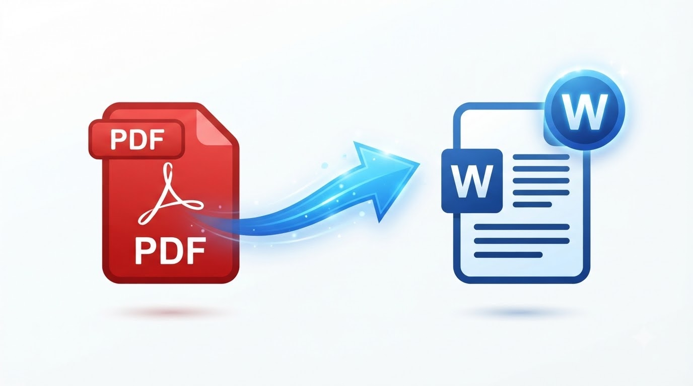

PDF to Word
Convert PDF documents to editable Word (.docx) files instantly. 100% browser-based — your files never leave your device.
Drop your PDF file here
or click to browse · PDF supported · Max 25 MB
Processing…
Why use DocEasy for PDF to Word?
- 100% private — files never leave your device
- Opens in Word, Google Docs, LibreOffice
- Preserves paragraphs and line breaks
- Free forever — no signup required
Complete Guide: How to Convert PDF to Word Online (2026)
PDFs are the world's favourite document format — perfect for sharing, printing, and preserving layout. But the moment you need to edit a PDF, the format becomes a barrier. PDFs are designed to be read-only. Whether you want to fix a typo, update a number, restructure content, or translate the document, you need the text in an editable format. That is where PDF to Word conversion comes in.
The DocEasy PDF to Word converter lets you turn any text-based PDF into an editable Word (.docx) file — completely in your browser. No uploads, no signup, no limits. This guide explains everything: how the tool works, what types of PDFs convert best, the real limitations to be aware of, and best practices to get the cleanest possible output.

📷 [Place Demo Image: assets/images/pdf-to-word-demo.jpg]How to Use — Quick Start
- Upload: Drag and drop your PDF file onto the upload zone, or click "Choose PDF File" to browse.
- Wait for extraction: The tool reads your PDF using PDF.js and extracts text from each page.
- Click Convert: Press the "Convert to Word" button.
- Download: Your .docx file downloads instantly to your device.
- Open and edit: Open the file in Word, Google Docs, or LibreOffice and start editing.
1. Why Convert PDF to Word?
PDF stands for Portable Document Format. Adobe created it in 1993 to solve a simple problem: documents looked different on different computers because of fonts, layout, and software versions. PDF froze everything into a single, uneditable file. It was an instant hit.
But that same locked design is a problem when you need to change something. The most common reasons to convert PDF to Word:
- Fix typos and errors: A document you received contains mistakes — you need to correct them.
- Update numbers: An invoice or report needs its figures refreshed for a new period.
- Restructure content: Move sections around, add paragraphs, delete outdated text.
- Repurpose content: Extract useful paragraphs from a PDF into a new proposal or email.
- Translate: Convert a foreign-language PDF into editable text for translation tools.
- Collaborate: Send the editable version to colleagues for review with track changes.
- Add your own branding: Take a template PDF and adapt it into your own design.
- Fill a form: Extract text from a form to auto-populate another document.
2. How the Tool Works
DocEasy's PDF to Word converter uses three technologies working together entirely in your browser:
- PDF.js — Mozilla's open-source library that parses PDF files and extracts text, coordinates, and font information from every page.
- Text reconstruction — The extracted text items are grouped into lines based on their y-coordinates, then into paragraphs based on vertical gaps and alignment.
- JSZip — Builds the resulting .docx file, which is actually a ZIP archive containing XML files that Word, Google Docs, and LibreOffice all understand.
Every step happens locally in your browser. No file is uploaded to any server. You can verify this by opening your browser's Developer Tools Network tab — no outgoing requests are made during conversion.
3. What Kind of PDFs Convert Best?
Not all PDFs are created equal. The converter works best with:
| PDF Type | Conversion Quality | Reason |
|---|---|---|
| Text-based PDF (from Word, Google Docs) | Excellent ⭐⭐⭐⭐⭐ | Real text — clean extraction |
| Digital report / eBook | Very good ⭐⭐⭐⭐ | Text-based, minor layout loss |
| Online article / receipt | Very good ⭐⭐⭐⭐ | Simple layout, clean text |
| PDF with tables | Fair ⭐⭐ | Table structure simplified to text |
| PDF with images/graphics | Poor ⭐⭐ | Images not extracted |
| Scanned PDF | Not supported ❌ | Image-only, needs OCR |
4. Understanding the Limitations
This tool performs text extraction, not pixel-perfect conversion. Here's the honest breakdown of what works and what doesn't:
What Is Preserved:
- Text content: Every word from every page.
- Paragraph structure: Line and paragraph breaks.
- Page boundaries: Each PDF page becomes a new page in Word.
- Reading order: Text flows in the correct sequence.
What Is NOT Preserved:
- Images, photos, and graphics: Not extracted. If you need images, use a different tool.
- Fonts: The Word document uses standard system fonts, not the original PDF fonts.
- Colors and styling: Bold, italic, and colors are not detected.
- Tables: Table content is preserved but the structure is flattened into sequential text.
- Multi-column layouts: Columns may merge into a single stream of text.
- Headers, footers, and page numbers: May or may not appear depending on the PDF.
- Hyperlinks: URLs remain as plain text — not clickable.
- Bookmarks and form fields: Not extracted.
For plain text-heavy documents — reports, articles, letters, contracts — the output is clean and immediately usable. For designed documents with complex visuals, you may need a more advanced conversion tool or manual recreation.
5. Scanned PDFs and OCR
A scanned PDF is just a collection of images — photographs of paper pages. The text you see is pixels, not real characters. There is no text to extract, so our converter cannot handle it.
To convert a scanned PDF, you need OCR (Optical Character Recognition). OCR technology reads the pixels and attempts to identify characters. If you have a scanned PDF:
- Convert the PDF pages to images first using our PDF to JPG tool.
- Run OCR on the resulting images using our Document Scanner & OCR.
- Copy the extracted text into Word and save.
OCR accuracy for clean, printed scans is typically 95–99%. For blurry or rotated scans, accuracy drops.
6. Privacy — Why Client-Side Conversion Matters
Most online PDF converters work the same way: you upload your file, it sits on their server, their software processes it, and you download the result. This means your document is sitting on an unknown server for an unknown period of time. For sensitive documents — contracts, financial records, ID proofs, medical reports — that's a real privacy risk.
DocEasy takes a different approach. Your PDF never leaves your device. Everything happens in your browser's memory. When you close the tab, the file is gone. This makes DocEasy one of the only genuinely private PDF to Word converters available.
7. Best Practices
- Use a text-based PDF: The cleaner the source, the cleaner the output.
- Keep the file under 25 MB: Larger files still work but take longer.
- Check the .docx after conversion: Open it in Word or Google Docs and review the formatting.
- Expect to fix formatting: Multi-column layouts and tables will need manual adjustment.
- Save the original PDF: Keep a backup in case you need to re-convert.
- For scanned PDFs, use OCR first: Run PDF to JPG then OCR.
- For very complex documents, use a dedicated desktop tool: Adobe Acrobat, ABBYY FineReader, or similar professional software.
8. Common Use Cases
- Editing contracts: Convert PDF contracts into editable Word for revisions.
- Updating invoices: Extract invoice content and update for a new period.
- Repurposing reports: Pull paragraphs from old PDF reports into a new proposal.
- Academic research: Extract text from PDF papers for citation and quotation.
- Translating documents: Convert PDF to Word, then use a translation tool.
- Form filling: Extract form structure from a PDF, then recreate it in Word.
- Resume editing: Convert a received PDF resume into editable text.
- Digital archiving: Convert legacy PDFs into editable text for archival systems.
9. Comparison with Other Tools
| Tool | Free? | Privacy | Signup? | Limits |
|---|---|---|---|---|
| DocEasy | Yes | 100% local | No | None |
| SmallPDF | Freemium | Cloud | Yes | 2/day |
| iLovePDF | Freemium | Cloud | No | Size limits |
| Adobe Acrobat | Paid | Cloud | Yes | 7 days trial |
| Google Docs | Free | Cloud | Google ID | 15 MB limit |
DocEasy is the only option that is completely free, requires no signup, and processes files 100% locally.
10. Frequently Asked Questions
Q: Is this PDF to Word converter really free?
Yes — 100% free, no signup, no watermark, no daily limits. All processing happens in your browser.
Q: Are my PDF files uploaded to a server?
No. Everything runs locally in your browser using PDF.js and JSZip. Your PDF never leaves your device. You can verify by watching the Developer Tools Network tab — no outbound requests are made during conversion.
Q: Will images be preserved in the Word file?
No. This tool performs text extraction only. Images, charts, and graphics from the PDF are not included in the .docx output.
Q: Can I convert a scanned PDF?
Scanned PDFs are image-only — they contain no real text. This tool does not perform OCR, so scanned PDFs will result in empty output. Use our PDF to JPG then OCR instead.
Q: Will tables be preserved?
Table text is extracted, but the table structure is not. You will see the text content but may need to recreate tables manually in Word.
Q: What file size is supported?
Up to 25 MB recommended. Larger files may work but will take longer to process.
Q: Does the output open in Google Docs?
Yes. The generated .docx file is standard Word format and opens in Microsoft Word, Google Docs, LibreOffice Writer, and Apple Pages.
Q: Can I convert multiple PDFs at once?
Currently one PDF at a time for maximum quality control. Batch conversion is on our roadmap.
Q: Will formatting like bold and italic be preserved?
No. Bold, italic, colors, and font styles are not detected during extraction. The output uses default Word formatting. This keeps the file clean and easy to restyle.
Q: Does it work on mobile?
Yes. The tool works on any modern Android, iOS, or iPad browser. No app installation required.
Q: What happens to my file after conversion?
Nothing — it stays in your browser's memory. When you close the tab or refresh the page, the file is gone. Nothing is retained, logged, or stored.
Q: Can I convert a password-protected PDF?
Password-protected PDFs need to be unlocked first. Our PDF Editor and PDF to JPG tools support password entry — you can unlock the PDF there, then convert pages here.
11. Popular Right Now — Trending Tools
- Word to PDF — convert DOCX to PDF (reverse)
- PDF to JPG — extract PDF pages as images
- Merge PDF — combine multiple PDFs
- Compress PDF — reduce PDF file size
- Document Scanner & OCR — extract text from scans
12. Related Tools You Might Need
If you found this tool useful, you may also like our Word to PDF converter (the reverse), our PDF to JPG for extracting pages as images, our PDF Merge for combining files, our PDF Split for extracting specific pages, our PDF Compressor for reducing size, our Document Scanner & OCR for scanned PDFs, and our Word Writer to create new documents online.
13. Conclusion
PDF to Word conversion is a daily need for students, professionals, researchers, and anyone who receives PDFs they need to edit. With the DocEasy PDF to Word converter, you get clean text extraction, instant Word output, and total privacy — all without uploading a single byte.
Bookmark this page and use it whenever you need to convert a PDF into an editable document.